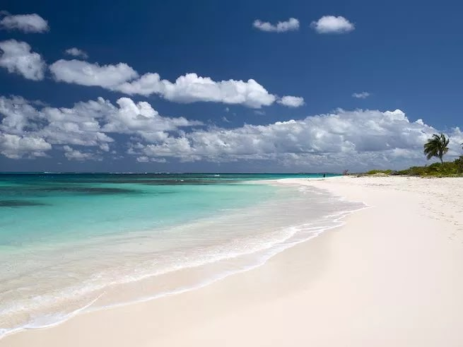

Shoal Bay East, Anguilla
A little bit peaceful retreat, a little bit party central - and a whole lot of flawless sand and soothing blue sea - is the recipe for this 1-mile stretch on Anguilla (often cited as the best of the island’s 33 beautiful beaches). Walk its length and enjoy serene views along with legendary local eateries Uncle Ernie’s (for BBQ) and Elodias Beach Bar (for grilled mahi mahi), washed down with rum punch, of course.